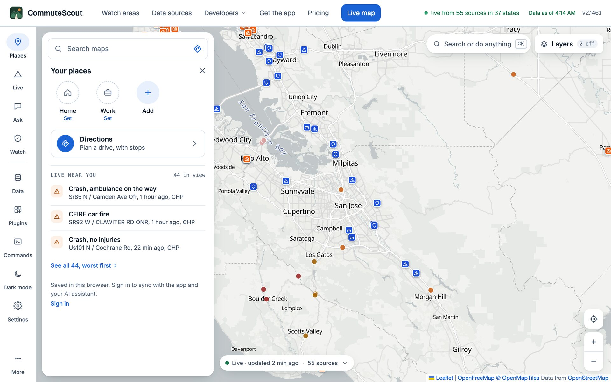

Work
The four bigger projects have write-ups. The smaller ones are below.

July 2026 to now
A live map of crashes, closures, chain controls and wildfires in 37 states. It all comes from 55 feeds that police and state DOTs already publish, and I just put them in one place. There's also a route planner, an API and an MCP server.
37states
55agency feeds
241releases

October 2026 to now
A desktop app that puts the Claude Code chats from all of my computers on one board, so I can see which ones are waiting on me and answer them from wherever I am. It also tells me what it'll cost to pick an old chat back up.
3platforms
15releases
Rustdesktop app

July 2026 to now
You type in a US address and it lists every internet provider that reports coverage there. It checks the new FCC filings every week and emails you if something better shows up.
49.1MFCC records
2,067providers
Weeklyrefresh

September 2023 to December 2024
Some industrial UR10 robot arms were about to be thrown out as e-waste, so I got them donated to the Foothill engineering club. I led the rebuild and the Python software that plays chess with Stockfish, and the team went from 4 people to about 20.
4 to 20people
2,700rated player beaten
UR10robot arm
Smaller projects
9 projects